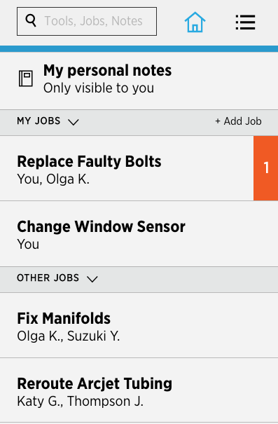
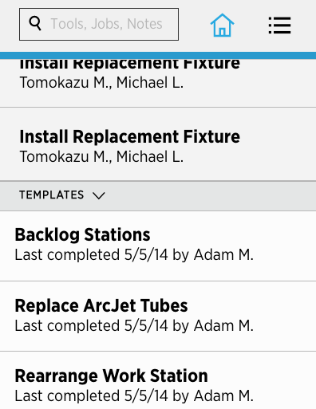

-
Home Page
The Home Page contains most of the main functions of HeliOS: jobs, job templates, and personal notes. Here, a technician can leave quick notes for himself, access the jobs he’s working on, as well as jobs his co-workers are performing. He can also create a new job based on an existing job template.
Job Page
The Job Page displays the notes, tools, and details associated with this job. On this page, Cameron can quickly add a new note, edit an existing note, and mark a note as complete. Similarly, for tools, Cameron add tools to this job, access details about each tool, and mark it as having been retrieved. Lastly, Cameron can edit the collaborators of this feature and make a template out of this job.
Search
The Search bar on the top navigation panel allows Cameron to perform a global search, based on keywords, across the whole HeliOS system for tools, notes, and jobs. With a global search that allows Cameron to access information with a couple of steps, HeliOS is flexible enough to support one-off, quick use.
Activity Feed
The Activity Feed is a running list of all of the updates in Cameron’s work environment, including the work he’s completed, as well as the progress of his collaborators. By collecting and communicating status information through one channel, HeliOS makes it easier for collaborators to work on projects together.